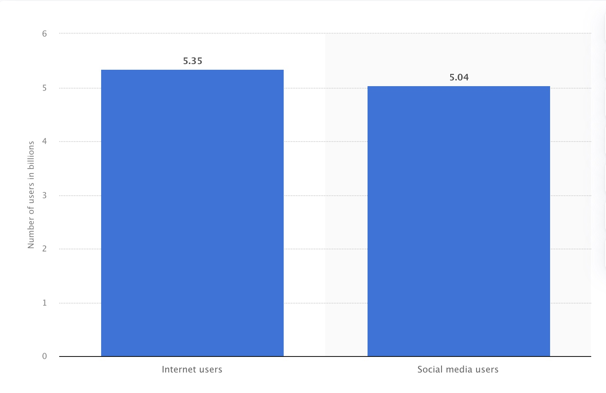
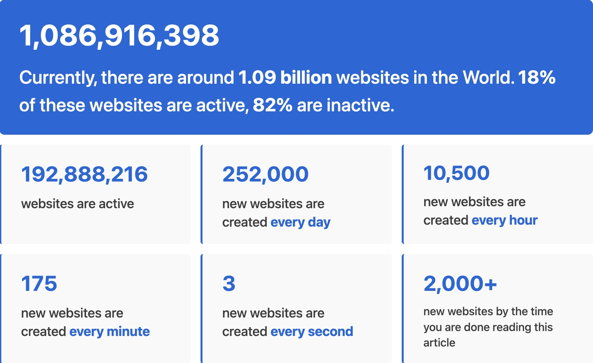

OWASP Top 10 Security Risks
prepared by Antonina Tyurina
Number of Internet Users Worldwide

Statistics on the number of web-sites

What is OWASP?
The Open Worldwide Application Security Project (OWASP) is a nonprofit foundation that works to improve the
security of software. Our programming includes:
- Community-led open source projects including code, documentation, and standards
- Over 250+ local chapters worldwide
- Tens of thousands of members
- Industry-leading educational and training conferences